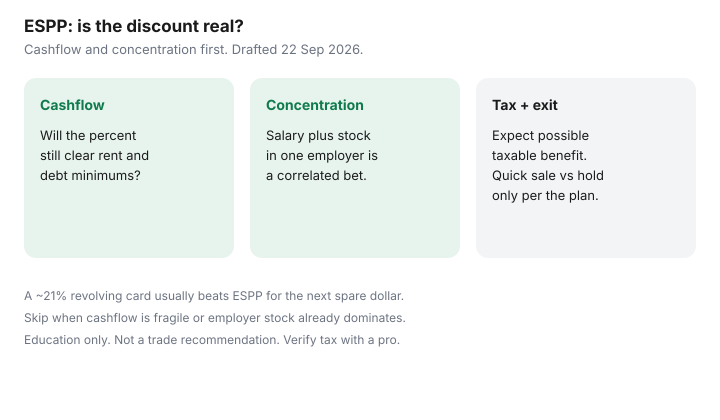

Personal Finance · Canada
Canadian ESPP and Workplace Purchase Plans: When the Discount Is Real Savings
An employee stock purchase plan (ESPP) or workplace purchase plan can offer shares at a discount to market. The discount looks like free money. It is not free if the payroll deduction starves the bill float, if too much of your net worth sits in one employer, or if tax on the benefit was never in the mental math.
This is a Canadian household checklist for “is the discount real?” Education only — not investment, tax, or employment advice. Plan documents win. CRA pages ~22 Sep 2026.
Disclosure: Brokerage and banking products are offer types. Saving Optimizer may later add partner links. We do not currently claim employer-plan or brokerage partnerships. No stock tips. No debt-settlement or payday offers. Education only.
Key takeaways
- Model the payroll percent against rent, debt minimums, and the emergency float before you enrol.
- Treat employer stock as concentration risk — salary plus equity in one company is a correlated bet.
- A quick-sale framework (when the plan allows) can lock the discount into cash or diversified accounts; holding is optional and riskier.
- Expect a possible taxable benefit; read the plan and your slips. Confirm with a pro for your situation.
- Skip ESPP when high-rate debt revolves, cashflow is fragile, or you already own too much employer stock.
How typical Canadian ESPP discounts work (high level)
Designs vary. Common patterns: you contribute a percent of pay after tax or as the plan defines; after a purchase period, shares are bought at a discount to a market price or to the lower of two prices; shares land in a plan account with holding or sale rules. Some workplaces use different purchase-plan labels. Read your booklet for contribution limits, discount percent, offering dates, and sale restrictions.
The discount is the headline. The cash that funded the purchase left your paycheque weeks earlier. That timing gap is why cashflow modelling comes first.

Cashflow impact of payroll deductions
Add ESPP to the map of voluntary deductions on optimize payroll deductions. If RRSP match, benefits, charity, and ESPP together remove more than the household can spare, something has to shrink. Priority for most employees: match and must-have benefits before ESPP.
| Item | Amount |
|---|---|
| Payroll contributions in the period | $200 |
| Shares bought at 10% discount (illustrative) | About $222 of market value for $200 cash |
| Headline “gain” before tax and risk | About $22 |
| If a card at 20.99% still revolves $200 | About $42 of annual interest on that $200 — larger than the headline discount |
If revolving debt at ~21% exists, the card usually beats ESPP for the next spare dollar. See debt or TFSA.
Concentration risk if too much sits in employer stock
Your wages already depend on the employer. Holding a large ESPP balance in the same name doubles the bet. A restructuring, a stock drop, or a sector shock can hit income and savings together. Diversification is not exciting; it is how households sleep.
A practical ceiling many educators use is keeping employer stock to a modest slice of liquid investable assets — exact percentages are personal. If ESPP plus other equity awards already dominate, pause new purchases.
Quick sale vs hold frameworks (education only)
- Quick sale (when allowed): sell after purchase, pay any tax due from the proceeds, move net cash to a HISA, TFSA, or debt payment per your written plan. Locks the discount; ends the single-stock hold.
- Partial hold: sell enough to recover contributions and tax; hold a small remainder only if you accept the risk.
- Long hold: only with eyes open on concentration, blackout rules, and tax. Not a default on this page.
Blackout periods, insider rules, and plan lockups can block a quick sale. Read those before you enrol. This is not advice to trade on non-public information.
Tax basics to verify with a pro
Canadian tax results depend on the legal shape of the plan (purchase plan versus stock option versus other). Employers often report a taxable benefit on a T4 or related slip when you receive a discount. Adjusted cost base and capital gains can matter when you sell. Québec filers need both federal and provincial views — see dual filing.
Do not rely on a U.S. ESPP blog for Canadian slips. Confirm with the plan administrator’s tax summary and, if the amounts are material, a preparer. This site does not prepare returns.
When to skip ESPP entirely
- High-interest revolving debt is unpaid.
- The emergency buffer is below one month of must-pays.
- Employer stock already dominates your investments.
- The payroll percent would risk NSF or missed rent.
- Fees, holding periods, or tax make the discount thin after honest math.
- You do not understand the plan well enough to explain it in one minute.
Sources & date stamps
- CRA — employment benefits and stock-option / security-purchase concepts on canada.ca; confirm the page that matches your plan type (~22 Sep 2026).
- Your employer’s ESPP or purchase-plan booklet — contribution limits, discount, sale rules, tax summaries.
- FCAC — debt and budgeting context: voluntary deductions should not break must-pay bills.
- Illustrative $200 / 10% table — education only, not a forecast of your plan’s return.
Frequently asked questions
Is an ESPP discount always free money?
No. You still fund the purchase from pay, you may concentrate risk in employer stock, and the discount is often a taxable benefit. The plan documents and your tax slip govern. Verify with a tax professional for your facts.
How does payroll funding affect cashflow?
ESPP contributions reduce take-home like other voluntary deductions. If rent and minimums are tight, a large ESPP percent can create NSF risk even when the discount looks attractive on paper.
Should I sell as soon as I can?
Many households sell promptly to convert the discount into cash or diversified savings and to limit concentration. Holding may be allowed but increases single-stock risk. This is education, not a trade recommendation.
What tax issues should I expect?
Canadian treatment depends on whether the plan is a stock option, a purchase plan, or another arrangement, and on your province. Watch T4 or other slips for taxable benefits. Confirm with CRA guidance or a preparer — this page is not a filing position.
When should I skip ESPP?
Skip or minimise when cashflow is fragile, when you already hold too much employer stock, when high-interest debt is revolving, or when the plan’s fees and holding rules erase the discount.